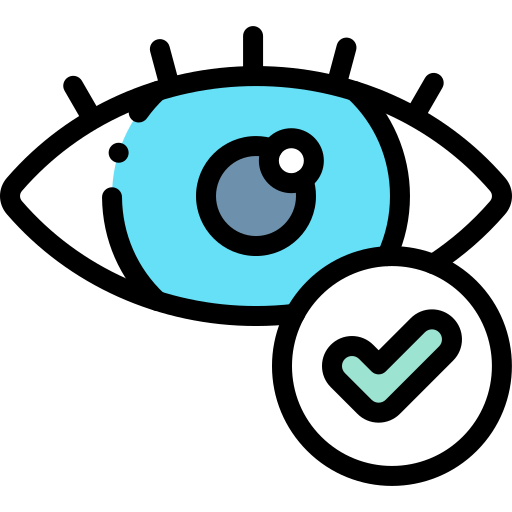
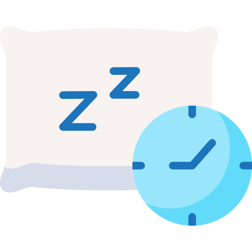
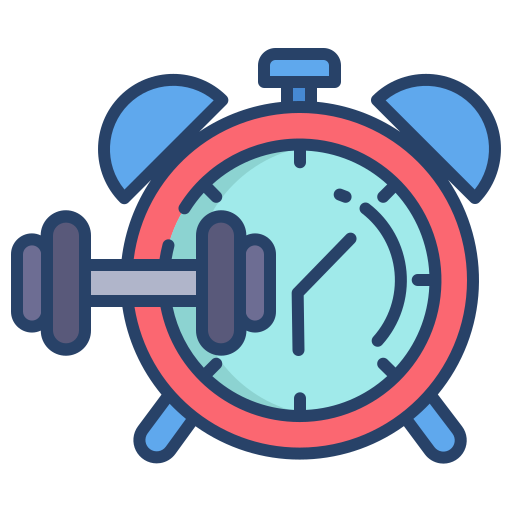

BENEFÍCIOS DE REDUZIR O USO DAS TELAS
Passar muito tempo em frente às telas pode fazer mal para a saúde, afetando os olhos, a postura, o sono e até a concentração. Dedicar menos tempo as telas ajuda a dormir melhor, ter mais convívio social e levar uma vida mais equilibrada.
-

SAÚDE OCULAR
Redução da fadiga ocular digital. O uso prolongado de telas pode causar cansaço nos olhos, visão turva e dor de cabeça. Menos tempo em telas reduz esse tipo de desconforto.
-

QUALIDADE NO SONO
A luz azul das telas interfere na produção de melatonina, afetando o sono. Reduzir o uso de dispositivos eletrônicos antes de dormir pode melhorar a qualidade do sono. Especialistas recomendam evitar telas de 1 a 2 horas antes de se deitar.
-

TEMPO PARA ATIVIDADES FíSICAS
Ao passar menos tempo em frente a telas, há mais oportunidades para realizar atividades físicas, o que contribui para uma saúde melhor.
-
MELHORA O COGNITIVO
Para crianças, menos tempo de tela promove o desenvolvimento de habilidades sociais, motoras e cognitivas por meio de brincadeiras criativas e interação com o ambiente físico.
Referência: A redução do tempo de tela e seus benefícios